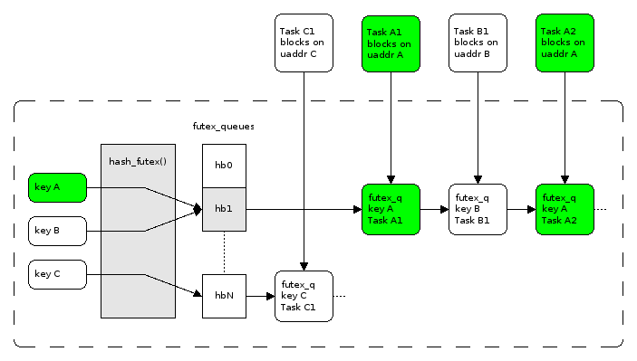

The futex (short for "Fast userspace mutex") mechanism was proposed by Linux contributors from IBM in 2002 [1]; it was integrated into the kernel in late 2003. The main idea is to enable a more efficient way for userspace code to synchronize multiple threads, with minimal kernel involvement.
In this post I want to provide a basic overview of futexes, how they work, and how they're used to implement the more familiar synchronization primitives in higher-level APIs and languages.
An important disclaimer: futexes are a very low-level feature of the Linux kernel, suitable for use in foundational runtime components like the C/C++ standard libraries. It is extremely unlikely that you will ever need to use them in application code.
Motivation
Before the introduction of futexes, system calls were required for locking and unlocking shared resources (for example semop). System calls are relatively expensive, however, requiring a context switch from userspace to kernel space; as programs became increasingly concurrent, locks started showing up on profiles as a significant percentage of the run time. This is very unfortunate, given that locks accomplish no real work ("business logic") but are only there to guarantee that access to shared resources is safe.
The futex proposal is based on a clever observation: in most cases, locks are actually not contended. If a thread comes upon a free lock, locking it can be cheap because most likely no other thread is trying to lock it at the exact same time. So we can get by without a system call, attemping much cheaper atomic operations first [2]. There's a very high chance that the atomic instruction will succeed.
However, in the unlikely event that another thread did try to take the lock at the same time, the atomic approach may fail. In this case there are two options. We can busy-loop using the atomic until the lock is cleared; while this is 100% userspace, it can also be extremely wasteful since looping can significantly occupy a core, and the lock can be held for a long time. The alternative is to "sleep" until the lock is free (or at least there's a high chance that it's free); we need the kernel to help with that, and this is where futexes come in.
Simple futex use - waiting and waking
The futex(2) system call multiplexes a lot of functionality on top of a single interface. I will not discuss any of the advanced options here (some of them are so esoteric they're not even officially documented) but will focus on just FUTEX_WAIT and FUTEX_WAKE. The man page description starts with a good introduction:
The futex() system call provides a method for waiting until a certain condition becomes true. It is typically used as a blocking construct in the context of shared-memory synchronization. When using futexes, the majority of the synchronization operations are performed in user space. A user-space program employs the futex() system call only when it is likely that the program has to block for a longer time until the condition becomes true. Other futex() operations can be used to wake any processes or threads waiting for a particular condition.
Simply stated, a futex is a kernel construct that helps userspace code synchronize on shared events. Some userspace processes (or threads) can wait on an event (FUTEX_WAIT), while another userspace process can signal the event (FUTEX_WAKE) to notify waiters. The waiting is efficient - the waiters are suspended by the kernel and are only scheduled anew when there's a wake-up signal.
Be sure to read the futex man page beyond the introduction; blog posts are not a substitute for documentation! At the very least read about the FUTEX_WAIT and FUTEX_WAKE calls, the arguments they take, their return values and possible errors.
Let's study a simple example demonstrating basic usage of futexes to coordinate two processes. The main function sets up the machinery and launches a child process that:
- Waits for 0xA to be written into a shared memory slot.
- Writes 0xB into the same memory slot.
Meanwhile, the parent:
- Writes 0xA into the shared memory slot.
- Waits for 0xB to be written into the slot.
This is a simple handshake between two processes. Here's the code:
int main(int argc, char** argv) {
int shm_id = shmget(IPC_PRIVATE, 4096, IPC_CREAT | 0666);
if (shm_id < 0) {
perror("shmget");
exit(1);
}
int* shared_data = shmat(shm_id, NULL, 0);
*shared_data = 0;
int forkstatus = fork();
if (forkstatus < 0) {
perror("fork");
exit(1);
}
if (forkstatus == 0) {
// Child process
printf("child waiting for A\n");
wait_on_futex_value(shared_data, 0xA);
printf("child writing B\n");
// Write 0xB to the shared data and wake up parent.
*shared_data = 0xB;
wake_futex_blocking(shared_data);
} else {
// Parent process.
printf("parent writing A\n");
// Write 0xA to the shared data and wake up child.
*shared_data = 0xA;
wake_futex_blocking(shared_data);
printf("parent waiting for B\n");
wait_on_futex_value(shared_data, 0xB);
// Wait for the child to terminate.
wait(NULL);
shmdt(shared_data);
}
return 0;
}
Note that we use POSIX shared memory APIs to create a memory location mapped into both processes. We can't just use a regular pointer here, because the address spaces of the two processes will be different [3].
Note that this is not a canonical usage of futex, which would be better employed to wait until a value changes from something rather than to something. It's just here to show the various possibilities in return values from futex. Later in the post a more canonical usage is demonstrated when we implement a mutex.
Here is wait_on_futex_value:
void wait_on_futex_value(int* futex_addr, int val) {
while (1) {
int futex_rc = futex(futex_addr, FUTEX_WAIT, val, NULL, NULL, 0);
if (futex_rc == -1) {
if (errno != EAGAIN) {
perror("futex");
exit(1);
}
} else if (futex_rc == 0) {
if (*futex_addr == val) {
// This is a real wakeup.
return;
}
} else {
abort();
}
}
}
This function's main added value on top of the futex system call is looping around when the wakeup is spurious. This can happen when val is not the expected value (yet) and also when another process was woken up before this one (can't really happen in this code sample, but is a real possibility in other scenarios).
Futex semantics are tricky [4]! FUTEX_WAIT will immediately return if the value at the futex address is not equal to val. In our case this can happen if the child issued a wait before the parent wrote 0xA, for example. The futex call will return an error with EAGAIN in this case.
Here is wake_futex_blocking:
void wake_futex_blocking(int* futex_addr) {
while (1) {
int futex_rc = futex(futex_addr, FUTEX_WAKE, 1, NULL, NULL, 0);
if (futex_rc == -1) {
perror("futex wake");
exit(1);
} else if (futex_rc > 0) {
return;
}
}
}
It's a blocking wrapper around FUTEX_WAKE, which will normally return quickly regardless of how many waiters it has woken up. In our sample, this waiting is part of the handshake, but in many cases you won't see it.
Futexes are kernel queues for userspace code
Simply stated, a futex is a queue the kernel manages for userspace convenience. It lets userspace code ask the kernel to suspend until a certain condition is satisfied, and lets other userspace code signal that condition and wake up waiting processes. Earlier we've menioned busy-looping as one approach to wait on success of atomic operations; a kernel-managed queue is the much more efficient alternative, absolving userspace code from the need to burn billions of CPU cycles on pointless spinning.
Here's a diagram from LWN's "A futex overview and update":
In the Linux kernel, futexes are implemented in kernel/futex.c. The kernel keeps a hash table keyed by the address to quickly find the proper queue data structure and adds the calling process to the wait queue. There's quite a bit of complication, of course, due to using fine-grained locking within the kernel itself and the various advanced options of futexes.
Timed blocking with FUTEX_WAIT
The futex system call has a timeout parameter which lets user code implement waiting with a time-out.
The futex-wait-timeout sample shows this in action. Here is the relevant part of the child process which waits on a futex:
printf("child waiting for A\n");
struct timespec timeout = {.tv_sec = 0, .tv_nsec = 500000000};
while (1) {
unsigned long long t1 = time_ns();
int futex_rc = futex(shared_data, FUTEX_WAIT, 0xA, &timeout, NULL, 0);
printf("child woken up rc=%d errno=%s, elapsed=%llu\n", futex_rc,
futex_rc ? strerror(errno) : "", time_ns() - t1);
if (futex_rc == 0 && *shared_data == 0xA) {
break;
}
}
If the wait takes longer than 500 ms, the process will loop and wait again. The sample lets you configure the length of time the parent process keeps the child waiting and observe the effects.
Using a futex to implement a simple mutex
In the motivation section that started this post, I explained how futexes help implement efficient locking in the common low-contention case. It's time to show a realistic implementation of a mutex using futexes and atomics. This is based on the second implementation in Ulrich Drepper's "Futexes are Tricky" paper.
For this sample I'm switching to C++, to use its standardized atomics (available since C++11). The full code is here; here is the important part:
class Mutex {
public:
Mutex() : atom_(0) {}
void lock() {
int c = cmpxchg(&atom_, 0, 1);
// If the lock was previously unlocked, there's nothing else for us to do.
// Otherwise, we'll probably have to wait.
if (c != 0) {
do {
// If the mutex is locked, we signal that we're waiting by setting the
// atom to 2. A shortcut checks is it's 2 already and avoids the atomic
// operation in this case.
if (c == 2 || cmpxchg(&atom_, 1, 2) != 0) {
// Here we have to actually sleep, because the mutex is actually
// locked. Note that it's not necessary to loop around this syscall;
// a spurious wakeup will do no harm since we only exit the do...while
// loop when atom_ is indeed 0.
syscall(SYS_futex, (int*)&atom_, FUTEX_WAIT, 2, 0, 0, 0);
}
// We're here when either:
// (a) the mutex was in fact unlocked (by an intervening thread).
// (b) we slept waiting for the atom and were awoken.
//
// So we try to lock the atom again. We set teh state to 2 because we
// can't be certain there's no other thread at this exact point. So we
// prefer to err on the safe side.
} while ((c = cmpxchg(&atom_, 0, 2)) != 0);
}
}
void unlock() {
if (atom_.fetch_sub(1) != 1) {
atom_.store(0);
syscall(SYS_futex, (int*)&atom_, FUTEX_WAKE, 1, 0, 0, 0);
}
}
private:
// 0 means unlocked
// 1 means locked, no waiters
// 2 means locked, there are waiters in lock()
std::atomic<int> atom_;
};
Where cmpxhg is a simple wrapper to subdue C++'s atomic primitive to the expected interface:
// An atomic_compare_exchange wrapper with semantics expected by the paper's
// mutex - return the old value stored in the atom.
int cmpxchg(std::atomic<int>* atom, int expected, int desired) {
int* ep = &expected;
std::atomic_compare_exchange_strong(atom, ep, desired);
return *ep;
}
The code snippet is heavily commented to explain how it works; reading Drepper's paper is recommended in any case, as it builds up to this implementation by first examining a simpler one which is subtly incorrect. One slightly non-kosher thing this code does is access the internal representation of std::atomic by casting the address of atom_ to int* when passing it to the futex syscall. This is because futex expects a simple address, while C++ atomics wrap their actual data in opaque types. This works on Linux on x64, but isn't generally portable. To make std::atomic play well with futex in a portable we'd have to add a portability layer. But it's not a need that comes up in practice - mixing futex with C++11 is not something anyone should do - these snippets are just demonstrational!
An interesting observation is about the meaning of the value sitting in the atom_ member. Recall that the futex syscall doesn't assign any meaning to the value - it's up to the user to do that. The 0,1,2 convention is useful for mutexes, and also the one used by the glibc implementation for low-level locks.
glibc mutex and low-level lock
This brings us to the glibc implementation of POSIX threads, which have the pthread_mutex_t type. As I've mentioned in the beginning of the post, futexes are not really for regular user code; rather, they are used by low-level runtimes and libraries to implement other, higher-level primitives. In this context, it's interesting to see how a mutex is implemented for NPTL. In the glibc source tree, this code is in nptl/pthread_mutex_lock.c
The code is significantly complicated by all the different types of mutexes it has to support, but we can discover some familiar building blocks if we dig deep enough. In addition to the file mentioned above, other files to look at (for x86) are sysdeps/unix/sysv/linux/x86_64/lowlevellock.h and nptl/lowlevellock.c. The code is dense, but the combination of atomic compare-and-exchange operations and futex invocations is apparent. The low-level lock machinery (lll_ or LLL_ prefixes) is used throughout the glibc code-base, not just in the implementation of POSIX threads.
The beginning of the comment at the top of sysdeps/nptl/lowlevellock.h should be familiar by now:
/* Low-level locks use a combination of atomic operations (to acquire and
release lock ownership) and futex operations (to block until the state
of a lock changes). A lock can be in one of three states:
0: not acquired,
1: acquired with no waiters; no other threads are blocked or about to block
for changes to the lock state,
>1: acquired, possibly with waiters; there may be other threads blocked or
about to block for changes to the lock state.
We expect that the common case is an uncontended lock, so we just need
to transition the lock between states 0 and 1; releasing the lock does
not need to wake any other blocked threads. If the lock is contended
and a thread decides to block using a futex operation, then this thread
needs to first change the state to >1; if this state is observed during
lock release, the releasing thread will wake one of the potentially
blocked threads.
..
*/
Futexes in the Go runtime
The Go runtime does not use libc, in most cases. Therefore, it cannot rely on the POSIX thread implementation in its own code. It invokes the underlying OS's system calls directly instead.
That makes it a good alternative candidate to study for its use of futexes. Since it can't just use a pthread_mutex_t for its locking, it has to roll its own lock. Let's see how this is done, by starting with the user-visible sync.Mutex type (in src/sync/mutex.go).
The Lock method of sync.Mutex is quite involved, as you might imagine. It first tries to use an atomic swap to quickly acquire a lock. If it turns out it has to wait, it defers to runtime_SemacquireMutex, which in turn calls runtime.lock. That function is defined in src/runtime/lock_futex.go [5], and defines some constants that will appear familiar:
const (
mutex_unlocked = 0
mutex_locked = 1
mutex_sleeping = 2
...
)
// Possible lock states are mutex_unlocked, mutex_locked and mutex_sleeping.
// mutex_sleeping means that there is presumably at least one sleeping thread.
runtime.lock also tries to speculatively grab a lock with an atomic; this function is used in a bunch of places in the Go runtime, so that makes sense, but I wonder if they couldn't have optimized the two consecutive atomics that occur when it's called by Mutex.lock, somehow.
If it discovers it has to sleep, it defers to futexsleep, which is OS-specific and lives in src/runtime/os_linux.go. This function calls invokes the futex system call directly with FUTEX_WAIT_PRIVATE (recall that this is sufficient for a single process, which the Go runtime fulfills).
| [1] | See "Fuss, Futexes and Furwocks: Fast Userlevel Locking in Linux" by Franke, Russell, Kirkwood. Published in 2002 for the Ottawa Linux Symposium. |
| [2] | Most modern processors have built-in atomic instructions implemented in HW. For example on Intel architectures cmpxhg is an instruction. While it's not as cheap as non-atomic instructions (especially in multi-core systems), it's significantly cheaper than system calls. |
| [3] | The code repository for this post also contains an equivalent sample using threads instead of processes. There we don't need to use shared memory but can instead use the address of a stack variable. |
| [4] | There's a paper written by Ulrich Drepper named "Futexes are Tricky" that explores some of the nuances. I'll be using it later on for the mutex discussion. It's a very good paper - please read it if you're interested in the topic. |
| [5] | For OSes that expose the futex(2) system call. The Go runtime has a fallback onto the semaphore system calls if futex is not supported. |